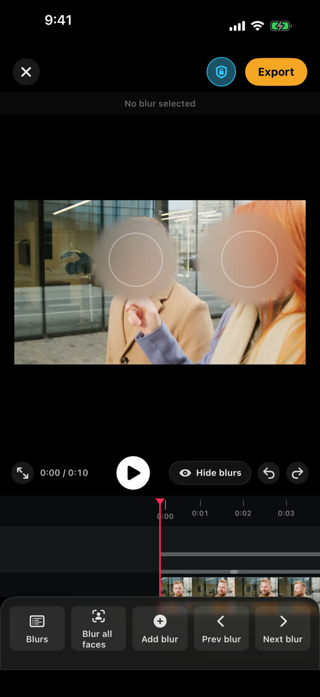
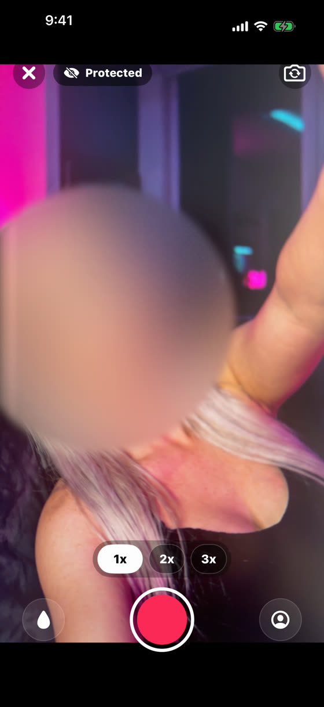
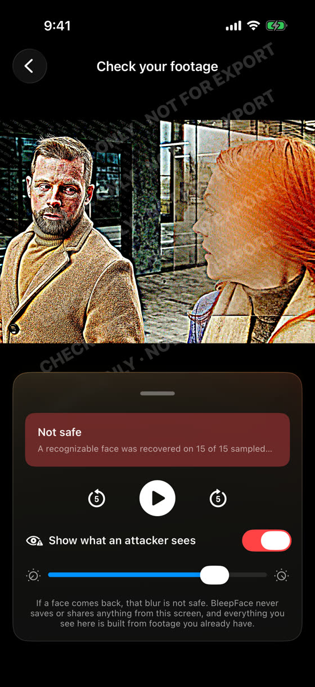
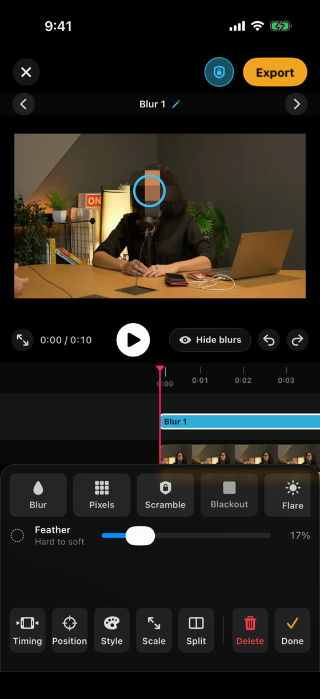
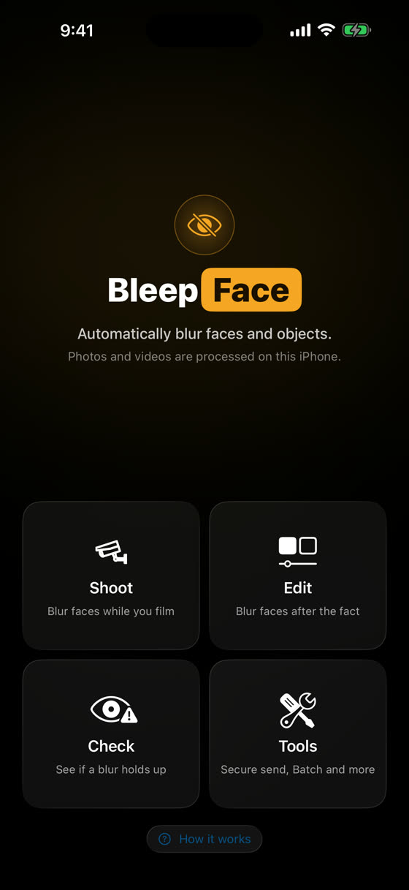

Blur any face.
It finds the faces for you, films with the blur baked in, and shows you if a blur can be undone. All on your iPhone.
It finds the faces for you, films with the blur baked in, and shows you if a blur can be undone. All on your iPhone.
Real screens from the app. Nothing here is a mockup.

Tap Blur all faces. It scans the whole clip and covers every face it finds, then follows them as they move. No keyframes.

Shoot covers faces live in the camera, so the blur is in the file before anything is saved.

Check runs the same tools someone would use to reverse a blur and shows you what comes back.
Most blur apps hand you a soft smear and a good feeling. BleepFace attacks its own work. Check sharpens, sampled frame by sampled frame, the way a stranger with free tools would, and tells you when a face comes back.
Not safe. A recognizable face was recovered on 15 of 15 sampled frames. This redaction can be reversed. Use a stronger blur or Blackout.
When nothing comes back, it says exactly that, and nothing more. It will never tell you a video is safe, because no software honestly can. Check is free, forever, and nothing on that screen can be saved or shared.

Every blur stays editable right up until you export. Stretch it, move it, restyle it, or take it off.
Face detection and blurring happen on the device in your hand. Photos and videos are processed on this iPhone and never uploaded.

There are no weekly plans and no fake countdowns here, and Check is free for everyone, forever.
Every feature. Exports carry a small BleepFace mark. Check is free.
Clean exports, no mark. Cancel anytime in your App Store settings.
3 day free trial, then billed yearly. Cancel anytime.
Launch price. Rises to $99.99 after the launch window. Pay once, own it.
Prices in USD. Subscriptions bill to your Apple ID and renew automatically unless cancelled at least 24 hours before the period ends. Manage or cancel anytime in your App Store settings.
Show more of your world. Expose less of the people in it.